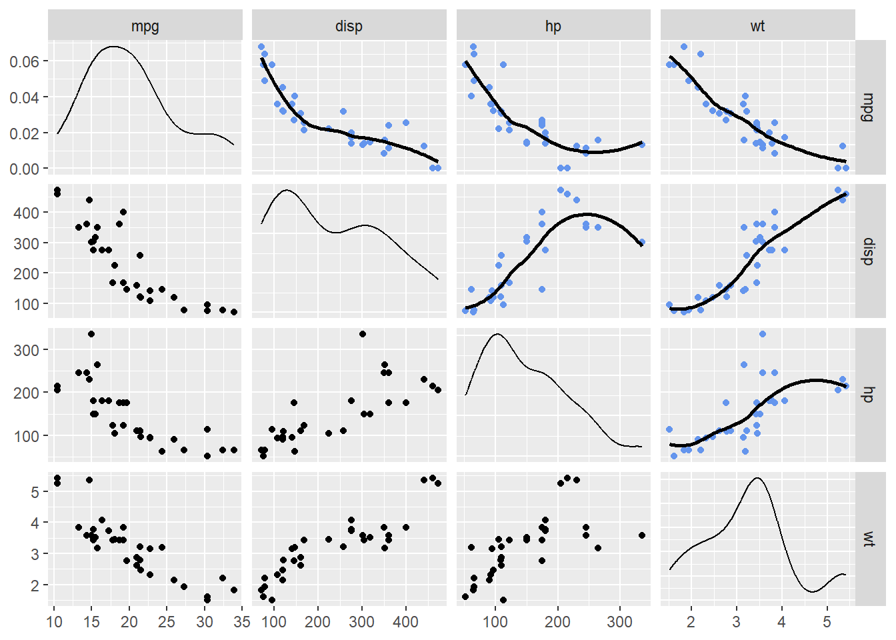

library(dplyr)
library(ggplot2)
library(parameters)
library(performance)
library(GGally)
library(gt)
library(gtsummary)
#library(ggstatsplot)Linear Models
Overview
In this module, we will introduce using R to model data using familiar linear models (e.g., OLS linear regression). The module will not formally address what a linear model is and why one would use one as such topics have been covered in prerequisite statistics courses. Tests of model diagnostics are also no addressed as the focus is on model fit and predictor influence on the outcome variable.
Readings and Preparation
Before Class: First, read to familiarize yourself with the concepts rather than master them. I will assume that you attend class with some level of basic understanding of concepts and working of functions. The goal of reading should be to understand and implement code functions as well as support your understanding and help your troubleshooting of problems. This cannot happen if you just read the content without interacting with it, however reading is absolutely essential to being successful during class time. Work through some examples so that you have a good idea of your level of understanding and confidence.
Class: In class, some functions and concepts will be introduced and we will practice implementing code through exercises.
Supplementary Readings
Libraries
- {here} 1.0.1: for file path management
- {dplyr} 1.1.4: for manipulating data frames
- {ggplot2} 3.5.0: for data visualization
- {GGally} 2.2.0: for generalized pairs plots
- or {tidyverse} 2.0.0: the full {tidyverse} ecosystem
- {parameters} 0.21.6: for details on model parameters
- {performance} 0.11.0: for evaluating model fit
- or {easystats} 0.7.1: the full {easystats} ecosystem
Others:
- {gt} 0.10.0: for model tables
- {gtsummary} 1.7.2: for model tables
Libraries
Data
We will work with the mtcars data set built into R. Examine the variables for variable types.
| Data: mtcars | ||||||||||
| mpg | cyl | disp | hp | drat | wt | qsec | vs | am | gear | carb |
|---|---|---|---|---|---|---|---|---|---|---|
| 21.0 | 6 | 160 | 110 | 3.90 | 2.620 | 16.46 | 0 | 1 | 4 | 4 |
| 21.0 | 6 | 160 | 110 | 3.90 | 2.875 | 17.02 | 0 | 1 | 4 | 4 |
| 22.8 | 4 | 108 | 93 | 3.85 | 2.320 | 18.61 | 1 | 1 | 4 | 1 |
| 21.4 | 6 | 258 | 110 | 3.08 | 3.215 | 19.44 | 1 | 0 | 3 | 1 |
| 18.7 | 8 | 360 | 175 | 3.15 | 3.440 | 17.02 | 0 | 0 | 3 | 2 |
| 18.1 | 6 | 225 | 105 | 2.76 | 3.460 | 20.22 | 1 | 0 | 3 | 1 |
Using GGally::ggpairs, explore the variable distributions and relationships. Lets reduce this data frame down to some variables that are numeric and convert those that represent categories (e.g., am = automatic vs. manual; vs = v vs. straight line). So as not to get distracted by mathematical measures of linear association, remove the correlations in the upper quadrants by setting them to be black using upper = list(continuous = wrap("blank"))). This plot is provided for exploring the data and thinking about the relationships before running any models.
mtcars |>
mutate(vs = factor(vs),
am = factor(am)
) |>
relocate(c(vs, am), .after = last_col()) |> # relocate to group at end in plot
select(-c(cyl, gear)) |> # remove some variables
ggpairs(upper = list(continuous = wrap("blank"))) # make correlations blankBy simple visual inspection, some variable relationships appear as they could be linear and some do not. Examine some variables more closely and also replace the empty squares with scatter plots with smoothed lines that will highlight the relationship. Note that the scatter plots above and below the diagonal will not be identical because they invert what variable is plotted along the axes.
mtcars |>
mutate(vs = factor(vs),
am = factor(am)
) |>
relocate(c(vs, am), .after = last_col()) |> # relocate to group at end in plot
select(-c(cyl, gear, qsec, am, vs)) |> # remove some variables
ggpairs(upper = list(continuous = wrap("smooth", # add a loess fit
method = "loess",
se = FALSE,
col = "cornflowerblue"
)
)
) Lets pull out some variables of interest to predict mpg, for example disp (displacement), hp (horsepower), and wt (weight) mpg.
mtcars |>
select(mpg, disp, hp, wt) |>
ggpairs(upper = list(continuous = wrap("smooth",
method = "loess",
se = FALSE,
col = "cornflowerblue"
)
)
)
You could try to fit a simple linear model to the data by predicting mpg from disp, hp, or wt individually. But before doing so, lets look at whether the transforming data will visually improve a linear fit. These steps will help you understand what the model is doing as well as understand how lm() if used to fit the data.
Transforming Data
Raw values can be transformed into other values. Some transformations can be linear, for example, standardizing data (e.g., z = x - mean(x)/sd(x)). Other transformations will not be linear, for example, exponential transformations (e.g., x^2 or X^3). Transforming data in different ways will allow for inspecting different relationships.
hp_dat <-
mtcars |>
mutate(
hp_z = (hp - mean(na.omit(hp)))/sd(na.omit(hp)),
hp_z2 = scale(hp), # standardize
hp_sq = hp^2, # square
hp_exp2 = exp(2 * log(hp)), # exponent 2
hp_sqrt = sqrt(hp), # square root
hp_log = log(hp) # natural log
) |>
select(c(mpg, contains("hp_")))Looking at the data frame, hp_z and hp_z2 look the same.
hp_dat |> head() |> gt()| mpg | hp_z | hp_z2 | hp_sq | hp_exp2 | hp_sqrt | hp_log |
|---|---|---|---|---|---|---|
| 21.0 | -0.5350928 | -0.5350928 | 12100 | 12100 | 10.488088 | 4.700480 |
| 21.0 | -0.5350928 | -0.5350928 | 12100 | 12100 | 10.488088 | 4.700480 |
| 22.8 | -0.7830405 | -0.7830405 | 8649 | 8649 | 9.643651 | 4.532599 |
| 21.4 | -0.5350928 | -0.5350928 | 12100 | 12100 | 10.488088 | 4.700480 |
| 18.7 | 0.4129422 | 0.4129422 | 30625 | 30625 | 13.228757 | 5.164786 |
| 18.1 | -0.6080186 | -0.6080186 | 11025 | 11025 | 10.246951 | 4.653960 |
However, be careful when scaling variables using scale. The function can produce some errors as it returns a matrix, which you can spot with glimpse().
glimpse(hp_dat)Rows: 32
Columns: 7
$ mpg <dbl> 21.0, 21.0, 22.8, 21.4, 18.7, 18.1, 14.3, 24.4, 22.8, 19.2, 17
$ hp_z <dbl> -0.53509284, -0.53509284, -0.78304046, -0.53509284, 0.41294217
$ hp_z2 <dbl[,1]> <matrix[26 x 1]>
$ hp_sq <dbl> 12100, 12100, 8649, 12100, 30625, 11025, 60025, 3844, 9025
$ hp_exp2 <dbl> 12100, 12100, 8649, 12100, 30625, 11025, 60025, 3844, 9025, 15
$ hp_sqrt <dbl> 10.488088, 10.488088, 9.643651, 10.488088, 13.228757, 10.24695
$ hp_log <dbl> 4.700480, 4.700480, 4.532599, 4.700480, 5.164786, 4.653960, 5.The solution is to standardize by formula or to coerce the object into a numeric vector using as.numeric().
hp_dat <-
mtcars |>
mutate(
hp_z = (hp - mean(na.omit(hp)))/sd(na.omit(hp)),
hp_z2 = as.numeric(scale(hp)), # standardize
hp_sq = hp^2, # square
hp_exp2 = exp(2 * log(hp)), # exponent 2
hp_sqrt = sqrt(hp), # square root
hp_log = log(hp) # natural log
) |>
select(c(mpg, hp, contains("hp_")))Now examine the exploratory visualizations. The key row is the first row for which mpg is paired with all of the other variables.
hp_dat |>
select(c("mpg", contains("hp"))) |>
ggpairs(upper = list(continuous = wrap("smooth",
method = "lm",
se = FALSE,
col = "cornflowerblue")
)
) Notice that mpg paired with hp, hp_z, or hp_z2 all appear the same. This is because of the linear transformation. Linear transformations of a predictor will not affect the model because each value is transformed equally (all divided by the standard deviation). Looking at the other scatter plots, hp_sqrt and hp_log appear to be related more linearly with mpg. They may be better transformations used to understand the relationship between the variables.
Adding the Pearsons r to the visualizations (to the lower panels), provides numeric clarification to this visual claim. The log transformation seems to be the best fit.
hp_dat |>
select(c("mpg", contains("hp"))) |>
ggpairs(
lower = list(continuous = wrap("cor")),
upper = list(continuous = wrap("smooth",
method = "lm",
se = FALSE,
col = "cornflowerblue")
))Linear Models
By fitting a linear model to your data, you are performing the process of estimating the parameters of a linear relationship between one or more predictor variables and an outcome/response variable. This linear relationship is seen visually as a straight line, represented by the equation for the line.
Linear Model Equation
The linear model equation: \[ Y = \beta_0 + \beta_1 X + \epsilon \]
- beta_0: is the intercept (the value of Y when X = 0)
- beta_1: is the slope (the change in Y for each one-unit change in X)
- epsilon: model error (the difference between the observed value of Y and value predicted by the model)
Building a Linear Model Using lm()
Using lm() we will specify the formula and the data arguments.
model <- lm(formula = mpg ~ hp,
data = hp_dat
)A summary of the models reveals the formula, the residuals, coefficients, error, p-values, R^2 values, and an F value.
summary(model)
Call:
lm(formula = mpg ~ hp, data = hp_dat)
Residuals:
Min 1Q Median 3Q Max
-5.7121 -2.1122 -0.8854 1.5819 8.2360
Coefficients:
Estimate Std. Error t value Pr(>|t|)
(Intercept) 30.09886 1.63392 18.421 < 2e-16 ***
hp -0.06823 0.01012 -6.742 1.79e-07 ***
---
Signif. codes: 0 '***' 0.001 '**' 0.01 '*' 0.05 '.' 0.1 ' ' 1
Residual standard error: 3.863 on 30 degrees of freedom
Multiple R-squared: 0.6024, Adjusted R-squared: 0.5892
F-statistic: 45.46 on 1 and 30 DF, p-value: 1.788e-07Visualizing Model Errors (Residuals)
Residuals
Running the model will try to fit a line through the points by minimizing the squared distance of the each point from the line (aka method of least squares). The model equation will allow for predicting the value of Y, which can be performed on each points. These errors are referred to as residuals.
We can visualized the linear fit and also show the residuals, or errors in prediction. Some mpg values are over-predicted (below the line) by hp model and some are under-predicted (above the line).
Predicting Using the log(hp)
We can build a model by transforming hp directly in the formula.
model_log <- lm(formula = mpg ~ log(hp),
data = hp_dat
)The Model Summary
summary(model_log)
Call:
lm(formula = mpg ~ log(hp), data = hp_dat)
Residuals:
Min 1Q Median 3Q Max
-4.9427 -1.7053 -0.4931 1.7194 8.6460
Coefficients:
Estimate Std. Error t value Pr(>|t|)
(Intercept) 72.640 6.004 12.098 4.55e-13 ***
log(hp) -10.764 1.224 -8.792 8.39e-10 ***
---
Signif. codes: 0 '***' 0.001 '**' 0.01 '*' 0.05 '.' 0.1 ' ' 1
Residual standard error: 3.239 on 30 degrees of freedom
Multiple R-squared: 0.7204, Adjusted R-squared: 0.7111
F-statistic: 77.3 on 1 and 30 DF, p-value: 8.387e-10Visualizing Model Errors (Residuals)
You can now see that the model fit is non-linear but the residuals are still determined as distance from the predicted values.
Predicting Using the hp_log = log(hp)
Because we have have transformed hp wee can use hp_log to predict mpg.
model_log2 <- lm(formula = mpg ~ hp_log,
data = hp_dat
)The Model Summary
summary(model_log2)
Call:
lm(formula = mpg ~ hp_log, data = hp_dat)
Residuals:
Min 1Q Median 3Q Max
-4.9427 -1.7053 -0.4931 1.7194 8.6460
Coefficients:
Estimate Std. Error t value Pr(>|t|)
(Intercept) 72.640 6.004 12.098 4.55e-13 ***
hp_log -10.764 1.224 -8.792 8.39e-10 ***
---
Signif. codes: 0 '***' 0.001 '**' 0.01 '*' 0.05 '.' 0.1 ' ' 1
Residual standard error: 3.239 on 30 degrees of freedom
Multiple R-squared: 0.7204, Adjusted R-squared: 0.7111
F-statistic: 77.3 on 1 and 30 DF, p-value: 8.387e-10Visualizing Model Errors (Residuals)
As we visualized in the ggpairs plot, the relationship between mpg and hp_log was rather linear and the Pearsons r value was rather high. Because hp_log was already transformed and because formula = mpg ~ hp_log, the model will fit a line through the data. Here, the residuals represent error in the predicting mpg based on log(hp) but in terms of a linear fit.
Comparing the Models
We can examine the model summaries. Importantly, we can see that they are identical.
| Model 1: mpg ~ log(hp) | ||||
| term | estimate | std.error | statistic | p.value |
|---|---|---|---|---|
| (Intercept) | 72.64047 | 6.004325 | 12.098024 | 4.552439e-13 |
| log(hp) | -10.76418 | 1.224304 | -8.792079 | 8.387409e-10 |
| Model 2: mpg ~ hp_log | ||||
| term | estimate | std.error | statistic | p.value |
|---|---|---|---|---|
| (Intercept) | 72.64047 | 6.004325 | 12.098024 | 4.552439e-13 |
| hp_log | -10.76418 | 1.224304 | -8.792079 | 8.387409e-10 |
Interpreting Model Output
So far, we have considered the model equation and basic components (coefficients) used to fit the line. We addressed the concept of fitting a model to data and reviewed visually that residuals represent model error, or difference between actual values and those predicted from a model. We will now address the components of a model output and how to interpret those components. The components will change with simple models and complex models involving multiple predictors, so we will address both bivariate and multiple-regression models.
NOTE: As a word of warning, you cannot interpret y-intercept of regression models when values of the predictor cannot be zero. The y-intercept represents the value of Y when X = 0. If a zero value of your predictor is not possible, you want to standardize your predictor. This process of centering the data will ensure that 0 is possible because the mean a variable that has been standardized is zero. For this reason, the model used for this section on interpretation of the model will use a standardized variable as a predictor.
Simple/Bivariate Linear Regression (Single-Predictor Models)
Predicting y from x1 (continuous) predictor:
model <- lm(formula = mpg ~ hp_z,
data = hp_dat
)Interpreting the Overall Model Fit
For model details, pass model to summary()
summary(model)
Call:
lm(formula = mpg ~ hp_z, data = hp_dat)
Residuals:
Min 1Q Median 3Q Max
-5.7121 -2.1122 -0.8854 1.5819 8.2360
Coefficients:
Estimate Std. Error t value Pr(>|t|)
(Intercept) 20.0906 0.6829 29.420 < 2e-16 ***
hp_z -4.6779 0.6938 -6.742 1.79e-07 ***
---
Signif. codes: 0 '***' 0.001 '**' 0.01 '*' 0.05 '.' 0.1 ' ' 1
Residual standard error: 3.863 on 30 degrees of freedom
Multiple R-squared: 0.6024, Adjusted R-squared: 0.5892
F-statistic: 45.46 on 1 and 30 DF, p-value: 1.788e-07R-squared Values
Multiple R-squared represents the proportion of variance in the outcome variable that is explained by, or accounted for by the predictor(s). The *square root** of this values is Pearsons r correlation coefficient. Because there is only one predictor in this model, this multiple R-squared is really just r squared. Because the model estimates are based on samples, they are not perfect for making inferences about the populations you really care about. The adjusted R-squared is adjusted for shrinkage, or loss of predictive power that occurs when using sample data to predict population data; the more error in the regression model (e.g., residuals), the more the adjusted R-squared will differ from the unadjusted R-squared.
The F-statistic
Understanding this statistic involves understanding variability, or error, in the data. By understanding what error exists in an outcome variable, you you can then understand whether another variable can help account for or explain (R-squared) those differences in the outcome variable.
Without knowing anything about the hp of a vehicle, the best guess about the vehicles mpg would be the average mpg of all vehicles. The deviation of each vehicles mpg from the mean mpg provides an estimate of the total variability, or error, in the data. The sum of all of those deviation hp - mean(hp) in squared units is sometimes referred to as Total Sums of Squares.
The value in using a regression model is to improve prediction of the outcome variable, thereby reducing prediction error. A way to think about the regression model is to consider whether knowing a vehicles hp will reduce the error in predicting its mpg, of course in conjunction with all cars in the sample. If knowing vehicle hp improves the prediction of mpg, then the prediction error associated with the regression model would be less than the error in the outcome variable alone.
The F-statistic represents the ANOVA test value (F value) for the ratio test of the model. A statistically significant result indicates that the regression model accounts for more variability in the outcome variable better than does a mean-based model that would predict all mpg values to be the mean mpg.
Another way to understand the F-statistic is to view an anova table of the regression model.
anova(model) |> broom::tidy() |> gt()| term | df | sumsq | meansq | statistic | p.value |
|---|---|---|---|---|---|
| hp_z | 1 | 678.3729 | 678.37287 | 45.4598 | 1.787835e-07 |
| Residuals | 30 | 447.6743 | 14.92248 | NA | NA |
The F statistic is the mean squared error for the model 678.372874 / mean square of the residuals 678.372874 = 45.4598033
| term | meansq | statistic |
|---|---|---|
| hp_z | 678.37287 | 45.4598 |
| Residuals | 14.92248 | NA |
People often compare the p-value to an alpha value (e.g., .05 or .01) to decide if the regression model fits the data better than the mean-based model. This ANOVA test only tells you whether the overall model fits the data; it does not examine the components of the model (e.g., beta 0, beta 1, etc.).
Model Parameters/Coefficients
Beyond an overall model fit, interpreting specific model parameters (the coefficients part of the output table) is important to understanding any regression model.
The coefficients report is displayed in 2 rows and 4 columns from summary(model).
If you wanted a cleaned-up tabular version of coefficients tidy with broom::tidy(), then round() across() some columns, and pass to gt().
summary(model) |>
broom::tidy() |>
mutate(across(.cols = 2:4,
.fns = ~round(.x, 5)
)
) |> gt()| term | estimate | std.error | statistic | p.value |
|---|---|---|---|---|
| (Intercept) | 20.09062 | 0.68288 | 29.42036 | 1.101810e-23 |
| hp_z | -4.67793 | 0.69381 | -6.74239 | 1.787835e-07 |
The Estimate column displays the two estimated coefficient values y-intercept (beta 0) and the regression coefficient (beta 1).
| term | estimate |
|---|---|
| (Intercept) | 20.090625 |
| hp_z | -4.677926 |
y-intercept (beta 0): 20.090625
slope (beta 1): -4.6779265
The
Std. Errorcolumn displays the error in estimating the coefficients. This error indicates the amount of error in coefficients; small error is good and would indicate that the intercept and slope would not vary as much from sample to sample.
| term | std.error |
|---|---|
| (Intercept) | 0.6828817 |
| hp_z | 0.6938085 |
- The
t-valuecolumn displays the value of the t-statistic, which simply tests whether the coefficient differs from 0 (H0: t = 0), which can be inferred also from examining thePr(>|t|)column which provides the p-value for the t-test.
| term | statistic | p.value |
|---|---|---|
| (Intercept) | 29.420360 | 1.101810e-23 |
| hp_z | -6.742389 | 1.787835e-07 |
In this case, we can see that the t-values are quite far from 0 and have correspondingly low p-values. Thus, the y-intercept and slope are non-zero.
Intercept
- y-intercept (beta 0): 20.090625
The first row corresponds to the intercept (beta 0). This y-intercept predicts the value of y when X = 0 (e.g., X = 0). A p-value less than or equal to alpha may indicate that the y-intercept differs from 0. Mathematically, beta 0 can be less than 0.
The intercept represents the mpg when hp =. Of course, you cannot have 0 horsepower. Because the mean of a standardized distribution equals zero, for this model, the y-intercept would represent mpg for the mean hp (the average vehicle).
Slope
The second row corresponds to the regression coefficient/slope (beta 1). This represents the increase or decrease (depending on whether the correlation is positive or negative) in mpg for each unit change in hp_z. Because horsepower is standardized, the unit change is 1 single standard deviation. A p-value equal to or less than alpha means the slope differs from 0. When there are multiple predictor variables, there will be slopes corresponding the each predictor and the outcome variable.
Intercept and Slope
Model parameters can also be checked using the parameters::model_parameters() function, which will provide them in a cleaner table and adjust for scientific notation as well as provide confidence intervals bounded around the estimates, which summary() does not provide.
parameters::model_parameters(model) |>
mutate(across(.cols = 2:7,
.fns = ~round(.x, 3)
)
) |>
gt()| Parameter | Coefficient | SE | CI | CI_low | CI_high | t | df_error | p |
|---|---|---|---|---|---|---|---|---|
| (Intercept) | 20.091 | 0.683 | 0.95 | 18.696 | 21.485 | 29.420 | 30 | 1.101810e-23 |
| hp_z | -4.678 | 0.694 | 0.95 | -6.095 | -3.261 | -6.742 | 30 | 1.787835e-07 |
Additional Metrics
Using performance::r2() and performance::model_performance(), you can see the model performance metrics, including AIC and BIC metrics.
AIC (Akaikes Information Criterion) is a metric for model accuracy. The lower the AIC values, the better the model (useful when comparing models). AICc is a version of AIC correcting for small sample sizes.
BIC (Bayesian Information Criterion) is a variant of AIC with a stronger penalty for including additional variables to the model.
Root Mean Squared Error (RMSE) represents the average error performed by the model in predicting the outcome for an observation. RMSE is the square root of the mean squared error (MSE). The lower the RMSE, the better the model.
performance::r2(model)# R2 for Linear Regression
R2: 0.602
adj. R2: 0.589performance::model_performance(model)# Indices of model performance
AIC | AICc | BIC | R2 | R2 (adj.) | RMSE | Sigma
---------------------------------------------------------------
181.239 | 182.096 | 185.636 | 0.602 | 0.589 | 3.740 | 3.863Examining Model Assumptions
You should generally examine model assumptions prior to interpreting the model because if the assumptions are violated, the model is invalid. In other words, you dont want to use a model to predict data when the model is not working in the ways it was designed.
The predictor(s) must be either quantitative or categorical (2 categories); the outcome variable must be quantitative and continuous. It should also be unbounded or unconstrained; for example if a scale that ranges from 1 to 9 is used to measure the criterion and if responses only fall between say 3 and 7, the data are constrained (bounded). An obvious solution is to check the range for the criterion using the built-in range() function.
Variance Concerns. Predictors should not be restricted and not have variances that are near 0. Range restriction in general is often problematic with regression (leading to attenuated correlations and reduce predictive ability). If you have a much smaller range, you should investigate reasons why.
Model Performance
Functions from {performance} library will be helpful for understanding the model. performance::check_model() will produce plot set without using additional code. This function will also adjust the plots to include depending on your model so that you dont always need to specify them. However, to check the assumptions individually, you will specify them with their unique functions.
check_heteroscedasticity()check_normality()check_outliers()check_collinearity()
Multiple Regression (Multiple-Predictor Models)
Although variability in an outcome variable can be explained by a single predictor, this does not preclude other variables from explaining variability in the outcome variables.
Looking at some other variables in the data set, wt and disp are also related to mpg. All are negatively correlate with mpg and negatively correlated with each other.
dat <-
mtcars |>
mutate(
hp_log = log(hp),
wt_log = log(wt)
)
dat |>
select(mpg, disp, hp, hp_log, wt, wt_log) |>
ggpairs(lower = list(continuous = wrap("cor")),
upper = list(continuous = wrap("smooth",
method = "loess",
se = FALSE,
col = "cornflowerblue"
)
)
)A multiple-predictor model can be built to answer some concerns including:
- Whether
mpgcan be predicted more accurately with more than one predictor; - Whether the model is a significant fit to the data;
- Whether the predictors account for the unique variance in the outcome variable that is not accounted for by the other predictor;
- Whether one predictor accounts for more variability than the other
Linear Model Equation
The linear model equation:
\[ Y = \beta_0 + \beta_1 X + \beta_2 + X + \epsilon \]
beta_0: is the intercept (the value of Y when X = 0)beta_1: is the slope (the change in Y for each one-unit change in X1)beta_2: is the slope (the change in Y for each one-unit change in X2)epsilon: model error
Because we know the log(hp) is a better fit to mpg and we can see that wt_log is slightly more correlated with mpg than is wt, we can build some additional models to test.
Model 2:
\[ Y = \beta_0 + log(hp) X + wt X + \epsilon \] Model 3:
\[ Y = \beta_0 + log(hp) X + \log(wt) X + \epsilon \]
Building Multiple-Predictor Models Using lm()
Adding predictors simply involves adding them to the formula. Both predictors will be centered to have a mean of 0 in order to interpret the intercept.
model_2 <- lm(formula = mpg ~ scale(hp_log) + scale(wt),
data = dat
)model_3 <- lm(formula = mpg ~ scale(hp_log) + scale(wt_log),
data = dat
)Comparing the Models
We can examine the two model summaries.
| Model 3: mpg ~ hp_log + wt | ||||
| term | estimate | std.error | statistic | p.value |
|---|---|---|---|---|
| (Intercept) | 20.090625 | 0.4134203 | 48.596130 | 2.431866e-29 |
| scale(hp_log) | -2.814230 | 0.6015312 | -4.678443 | 6.195509e-05 |
| scale(wt) | -3.214835 | 0.6015312 | -5.344418 | 9.741112e-06 |
| Model 3: mpg ~ hp_log + wt_log | ||||
| term | estimate | std.error | statistic | p.value |
|---|---|---|---|---|
| (Intercept) | 20.090625 | 0.3684599 | 54.525953 | 8.935489e-31 |
| scale(hp_log) | -2.467985 | 0.5489948 | -4.495461 | 1.028164e-04 |
| scale(wt_log) | -3.619529 | 0.5489948 | -6.593012 | 3.174932e-07 |
Interpreting the Model
Intercept: The intercept term represents the expected value of the response variable when all predictor variables are zero. Because they are centered, the intercept now represents the predicted value of the outcome when all predictors are their mean values.
Coefficients: for predictor variables (, , , ): Each coefficient for a predictor variable represents the change in the expected value of the response variable for a one-unit change in that predictor variable, which holding constant all other predictors. Because the predictors are centered, the unit change is a standard deviation. As with Pearsons r values, coefficients can be positive or negative, reflecting the nature of the relationship.
R-Squared: The overall model fit can be measured with R-squared. When your goal is to understand how much variance is accounted for by predictors, use this measure. Only 100% of the variance can be accounted for by predictors.
Interaction terms: If interaction terms are included in the model, the interpretation of coefficients becomes more complex. Interaction terms represent the combined effect of two or more predictor variables on the response variable, and their coefficients indicate how the effect of one predictor variable changes depending on the level of another predictor variable.
Root Mean Squared Error (RMSE): Another measure of model fit. Use RMSE when you want to assess the models predictive accuracy and understand the magnitude of prediction errors. The closer the value is to 0, the less squared error exists. When comparing models, lower RMSE is typically better.
Comparing Models
performance::compare_performance(model_2, model_3, rank = TRUE)# Comparison of Model Performance Indices
Name | Model | R2 | R2 (adj.) | RMSE | Sigma | AIC weights | AICc weights | BIC weights | Performance-Score
------------------------------------------------------------------------------------------------------------------
model_3 | lm | 0.888 | 0.880 | 1.984 | 2.084 | 0.975 | 0.975 | 0.975 | 100.00%
model_2 | lm | 0.859 | 0.849 | 2.226 | 2.339 | 0.025 | 0.025 | 0.025 | 0.00%Using RMSE to compare, we see that the model using the log of both predictors is a better fit. Similarly, R-squared is also higher.
Interpreting Model Coefficients
Inspecting the better fitting model, the coefficients for both predictors have associated t-values that are non-zero. Thus, both log(hp) and log(wt) account for variability in mpg that is unique from other predictors in the model. This t-values provides information about the predictors explaining variance in the response variable, holding all other predictors constant.
parameters::parameters(model_3) |>
mutate(across(.cols = 2:6,
.fns = ~round(.x, 3)
)
) |>
gt() |>
tab_header(title = "Model 3: mpg ~ log(hp) + log(wt)")| Model 3: mpg ~ log(hp) + log(wt) | ||||||||
| Parameter | Coefficient | SE | CI | CI_low | CI_high | t | df_error | p |
|---|---|---|---|---|---|---|---|---|
| (Intercept) | 20.091 | 0.368 | 0.95 | 19.337 | 20.844 | 54.525953 | 29 | 8.935489e-31 |
| scale(hp_log) | -2.468 | 0.549 | 0.95 | -3.591 | -1.345 | -4.495461 | 29 | 1.028164e-04 |
| scale(wt_log) | -3.620 | 0.549 | 0.95 | -4.742 | -2.497 | -6.593012 | 29 | 3.174932e-07 |
If you dont need to add the t-values, gtsummary::tbl_regression() makes a more concise table.
model_3 |>
tbl_regression()| Characteristic | Beta | 95% CI1 | p-value |
|---|---|---|---|
| scale(hp_log) | -2.5 | -3.6, -1.3 | <0.001 |
| scale(wt_log) | -3.6 | -4.7, -2.5 | <0.001 |
| 1 CI = Confidence Interval | |||
Summary
Linear models are useful for understanding underlying variable relationships. When raw values are non-linear, values can be transformed in order to fit a linear model. The fit of a model can be evaluated with R-squared and RMSE values. Although outcome variables may be predicted by a single variable, more than one predictor (numeric or categorical) can be used for more complex models to understand how all predictors aid in the overall model fit as well as how each individual predictor does while other predictors are held constant.
Session Information
sessioninfo::session_info() Session info
setting value
version R version 4.3.2 (2023-10-31 ucrt)
os Windows 11 x64 (build 22621)
system x86_64, mingw32
ui RTerm
language (EN)
collate English_United States.utf8
ctype English_United States.utf8
tz America/Los_Angeles
date 2024-04-06
pandoc 3.1.5 @ C:/PROGRA~1/Pandoc/ (via rmarkdown)
Packages
! package * version date (UTC) lib source
P backports 1.4.1 2021-12-13 [?] CRAN (R 4.3.0)
bayestestR 0.13.2 2024-02-12 [1] RSPM (R 4.3.0)
BiocManager 1.30.22 2023-08-08 [1] RSPM (R 4.3.0)
P bit 4.0.5 2022-11-15 [?] CRAN (R 4.3.1)
P bit64 4.0.5 2020-08-30 [?] CRAN (R 4.3.1)
broom 1.0.5 2023-06-09 [1] RSPM (R 4.3.0)
broom.helpers 1.14.0 2023-08-07 [1] RSPM (R 4.3.0)
P cli 3.6.1 2023-03-23 [?] CRAN (R 4.3.1)
coda 0.19-4 2020-09-30 [1] RSPM (R 4.3.0)
P codetools 0.2-19 2023-02-01 [?] CRAN (R 4.3.1)
P colorspace 2.1-0 2023-01-23 [?] CRAN (R 4.3.1)
commonmark 1.9.0 2023-03-17 [1] RSPM (R 4.3.0)
P crayon 1.5.2 2022-09-29 [?] CRAN (R 4.3.1)
datawizard 0.10.0 2024-03-26 [1] RSPM (R 4.3.0)
P digest 0.6.33 2023-07-07 [?] CRAN (R 4.3.1)
dplyr * 1.1.4 2023-11-17 [1] RSPM (R 4.3.0)
P ellipsis 0.3.2 2021-04-29 [?] CRAN (R 4.3.1)
emmeans 1.9.0 2023-12-18 [1] RSPM (R 4.3.0)
estimability 1.4.1 2022-08-05 [1] RSPM (R 4.3.0)
P evaluate 0.21 2023-05-05 [?] CRAN (R 4.3.1)
P fansi 1.0.4 2023-01-22 [?] CRAN (R 4.3.1)
P farver 2.1.1 2022-07-06 [?] CRAN (R 4.3.1)
P fastmap 1.1.1 2023-02-24 [?] CRAN (R 4.3.1)
P forcats * 1.0.0 2023-01-29 [?] CRAN (R 4.3.1)
P generics 0.1.3 2022-07-05 [?] CRAN (R 4.3.1)
GGally * 2.2.0 2023-11-22 [1] RSPM (R 4.3.0)
ggplot2 * 3.5.0 2024-02-23 [1] RSPM (R 4.3.0)
ggstats 0.5.1 2023-11-21 [1] RSPM (R 4.3.0)
glue 1.6.2 2022-02-24 [1] RSPM (R 4.3.0)
gt * 0.10.0 2023-10-07 [1] RSPM (R 4.3.0)
P gtable 0.3.4 2023-08-21 [?] CRAN (R 4.3.1)
gtsummary * 1.7.2 2023-07-15 [1] RSPM (R 4.3.0)
haven 2.5.4 2023-11-30 [1] RSPM (R 4.3.0)
here 1.0.1 2020-12-13 [1] RSPM (R 4.3.0)
P hms 1.1.3 2023-03-21 [?] CRAN (R 4.3.1)
htmltools 0.5.7 2023-11-03 [1] RSPM (R 4.3.0)
htmlwidgets 1.6.4 2023-12-06 [1] RSPM (R 4.3.0)
insight 0.19.10 2024-03-22 [1] RSPM (R 4.3.0)
P jsonlite 1.8.7 2023-06-29 [?] CRAN (R 4.3.1)
knitr 1.45 2023-10-30 [1] RSPM (R 4.3.0)
P labeling 0.4.2 2020-10-20 [?] CRAN (R 4.3.0)
labelled 2.12.0 2023-06-21 [1] RSPM (R 4.3.0)
P lattice 0.21-8 2023-04-05 [?] CRAN (R 4.3.1)
P lifecycle 1.0.3 2022-10-07 [?] CRAN (R 4.3.1)
lubridate * 1.9.3 2023-09-27 [1] RSPM (R 4.3.0)
magrittr 2.0.3 2022-03-30 [1] RSPM (R 4.3.0)
markdown 1.12 2023-12-06 [1] RSPM (R 4.3.0)
P MASS 7.3-60 2023-05-04 [?] CRAN (R 4.3.1)
P Matrix 1.6-1 2023-08-14 [?] CRAN (R 4.3.1)
P mgcv 1.8-42 2023-03-02 [?] CRAN (R 4.3.1)
multcomp 1.4-25 2023-06-20 [1] RSPM (R 4.3.0)
P munsell 0.5.0 2018-06-12 [?] CRAN (R 4.3.1)
P mvtnorm 1.2-2 2023-06-08 [?] CRAN (R 4.3.1)
P nlme 3.1-162 2023-01-31 [?] CRAN (R 4.3.1)
parameters * 0.21.6 2024-03-18 [1] RSPM (R 4.3.0)
performance * 0.11.0 2024-03-22 [1] RSPM (R 4.3.0)
P pillar 1.9.0 2023-03-22 [?] CRAN (R 4.3.1)
P pkgconfig 2.0.3 2019-09-22 [?] CRAN (R 4.3.1)
plyr 1.8.9 2023-10-02 [1] RSPM (R 4.3.0)
P purrr * 1.0.2 2023-08-10 [?] CRAN (R 4.3.1)
P R.methodsS3 1.8.2 2022-06-13 [?] CRAN (R 4.3.0)
P R.oo 1.25.0 2022-06-12 [?] CRAN (R 4.3.0)
P R.utils 2.12.2 2022-11-11 [?] CRAN (R 4.3.1)
P R6 2.5.1 2021-08-19 [?] CRAN (R 4.3.1)
P RColorBrewer 1.1-3 2022-04-03 [?] CRAN (R 4.3.0)
P Rcpp 1.0.11 2023-07-06 [?] CRAN (R 4.3.1)
readr * 2.1.4 2023-02-10 [1] RSPM (R 4.3.0)
renv 1.0.3 2023-09-19 [1] RSPM (R 4.3.0)
P rlang 1.1.1 2023-04-28 [?] CRAN (R 4.3.1)
rmarkdown 2.25 2023-09-18 [1] RSPM (R 4.3.0)
P rprojroot 2.0.3 2022-04-02 [?] CRAN (R 4.3.1)
rstudioapi 0.15.0 2023-07-07 [1] RSPM (R 4.3.0)
sandwich 3.1-0 2023-12-11 [1] RSPM (R 4.3.0)
P sass 0.4.7 2023-07-15 [?] CRAN (R 4.3.1)
scales 1.3.0 2023-11-28 [1] RSPM (R 4.3.0)
sessioninfo 1.2.2 2021-12-06 [1] RSPM (R 4.3.0)
P stringi 1.7.12 2023-01-11 [?] CRAN (R 4.3.0)
stringr * 1.5.1 2023-11-14 [1] RSPM (R 4.3.0)
P survival 3.5-7 2023-08-14 [?] CRAN (R 4.3.2)
TH.data 1.1-2 2023-04-17 [1] RSPM (R 4.3.0)
P tibble * 3.2.1 2023-03-20 [?] CRAN (R 4.3.1)
P tidyr * 1.3.0 2023-01-24 [?] CRAN (R 4.3.1)
P tidyselect 1.2.0 2022-10-10 [?] CRAN (R 4.3.1)
tidyverse * 2.0.0 2023-02-22 [1] RSPM (R 4.3.0)
P timechange 0.2.0 2023-01-11 [?] CRAN (R 4.3.1)
P tzdb 0.4.0 2023-05-12 [?] CRAN (R 4.3.1)
utf8 1.2.4 2023-10-22 [1] RSPM (R 4.3.0)
vctrs 0.6.5 2023-12-01 [1] RSPM (R 4.3.0)
vroom * 1.6.5 2023-12-05 [1] RSPM (R 4.3.0)
P withr 2.5.0 2022-03-03 [?] CRAN (R 4.3.1)
P xfun 0.40 2023-08-09 [?] CRAN (R 4.3.1)
P xml2 1.3.5 2023-07-06 [?] CRAN (R 4.3.1)
xtable 1.8-4 2019-04-21 [1] RSPM (R 4.3.0)
P yaml 2.3.7 2023-01-23 [?] CRAN (R 4.3.0)
zoo 1.8-12 2023-04-13 [1] RSPM (R 4.3.0)
[1] C:/Users/gcook/Sync/git/fods24/renv/library/R-4.3/x86_64-w64-mingw32
[2] C:/Users/gcook/AppData/Local/R/cache/R/renv/sandbox/R-4.3/x86_64-w64-mingw32/5b568fc0
P Loaded and on-disk path mismatch.